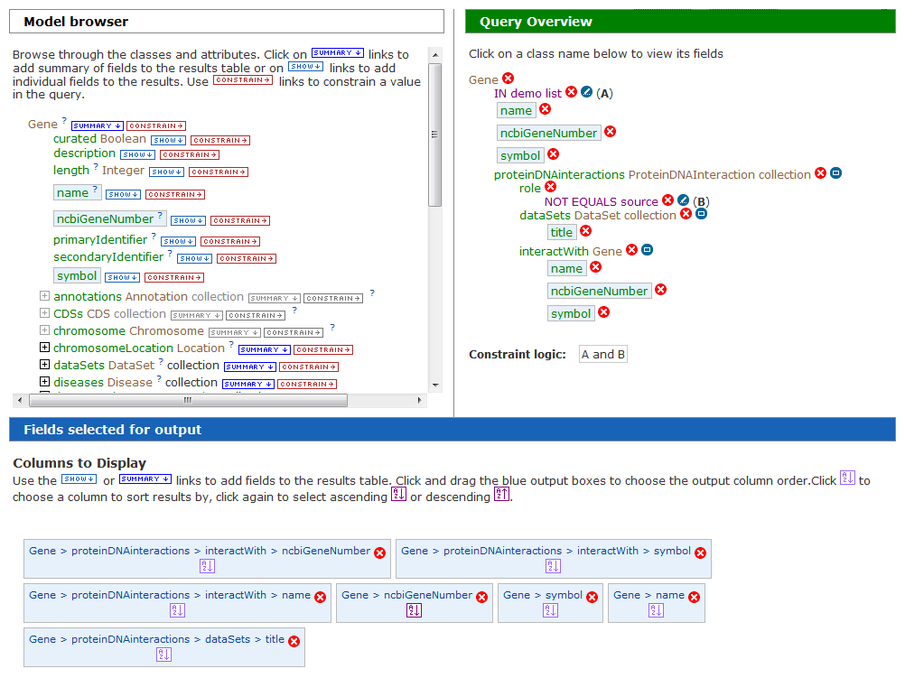
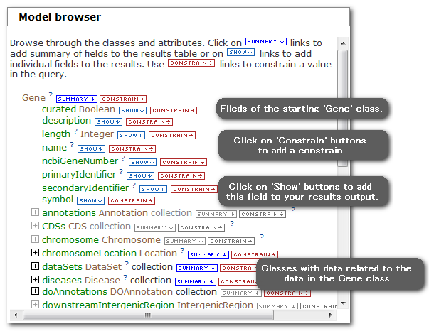
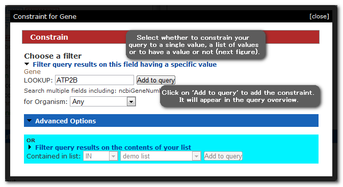
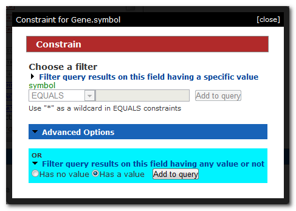

The basics
The Query Builder allows you to construct your own custom queries or edit a template query. It consists of the following sections:
1. The Model Browser: Allows you to browse the TargetMine data model and select the data you wish to query.
2. Query Summary: Shows the set of constraints (filters) you have applied to the data.
3. Constraint editor: Allows you to add and edit constraints.
4. Output columns: Shows the columns you have selected for your results table and allows you to select the column on which to sort the results.

Model Browser
The model browser allows you to browse the TargetMine data model and select the data you wish to query. The browser displays an initial starting class, which in the example below is 'Gene'. If you are building a query from scratch you will have selected the initial starting class to start building your query. From this initial class it is possible to browse to related classes. Expanding a related class again shows classes related to that class and so on. For each class there is also a set of relevant fields, such as Gene symbol and Gene identifier. For each class and field there are two buttons:
1. Constrain: Allows you to add a constaint (filter) to that particular class or field.
2. Show: Allows you to add that field to your results table output.

Constraints
Clicking on a constraint button in the model browser brings up a box on the left hand pane which allows you to define your constraint. If you are constraining a field the following constraint options will be available:
1. Filter query results on this field having a specific value: Allows you to constrain your query to a single value. An example would be constraining the Gene symbol field to 'ATP2B'.
2. Filter query results on the contents of your list: Allows you to constrain your query to a list of values. The list can be selected from the drop down list which will contain those lists you have created.
3. Filter query results on this field having any value or not: Allows you to constrain this field to data which either must have a value for this field or do not have a value for this field.


Results output
Clicking on a show button next to a field in the model browser will
add that field to your 'Fields selected for output' list (and also Query summary).
This means that data from that field will appear as a column in your results table.
You can change the order of the columns by picking up the box and moving it (drag-n-drop).
You can remove a column using the red cross.
You can select a column on which the results should be sorted by clicking
on the sort icon ![[icon]](sort.png) within the relevant box,
click again to select ascending or descending.
In the example below the results table will
contain four columns: Gene id, Gene symbol, Pathway identifier, and Pathway name.
Each box shows the path taken in the model browser - eg Gene >
pathways > name. However, usually just the last two parts of the
path (eg pathways > name) are enough to show you what will be in that column.
within the relevant box,
click again to select ascending or descending.
In the example below the results table will
contain four columns: Gene id, Gene symbol, Pathway identifier, and Pathway name.
Each box shows the path taken in the model browser - eg Gene >
pathways > name. However, usually just the last two parts of the
path (eg pathways > name) are enough to show you what will be in that column.